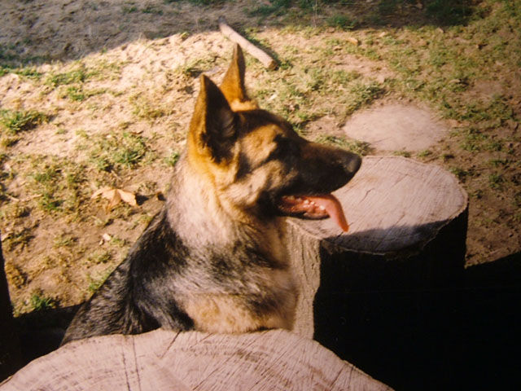
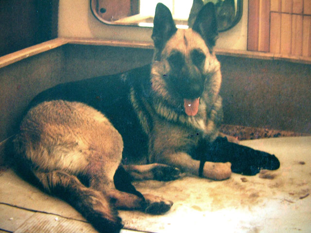
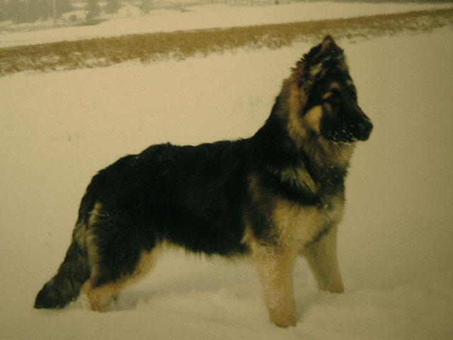
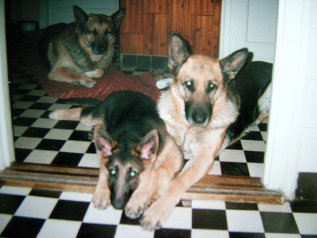
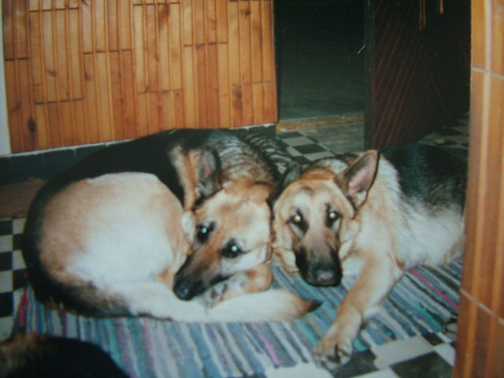
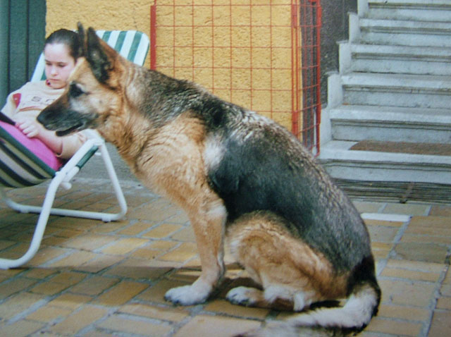
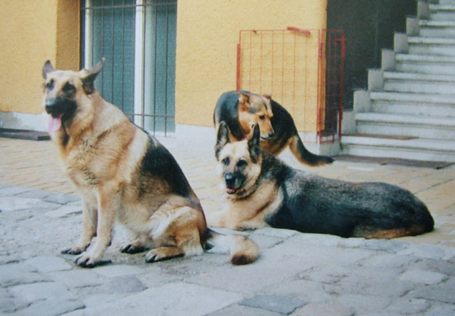
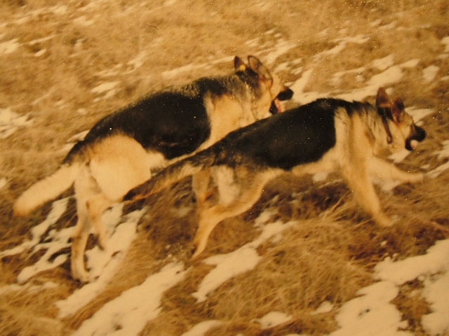
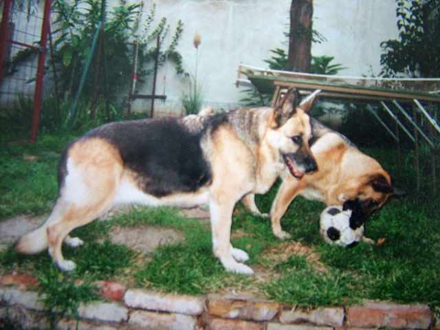

Tegnap október 23-a volt. Aki régóta olvas, nyilván azt várná, hogy a szokásos, vitriolos megjegyzésekkel fűszerezett képriporttal jelentkezzek az e napon szokásos, városszerte rendezett hacacárékról. Mégsem erről lesz szó, mert nekem október 23 ezentúl nem elsősorban holmi forradalom évfordulója lesz. Reggel ugyanis rövid SMS érkezett telefonomra szüleimtől:
"Gina elindult Alfa után!"Gina mama! Öreg farkasanyó! Rohantunk Athinával anyámékhoz, de már hiába. Az Anyakirálynő, Gina anyó október 23-án, déli fél tizenkettőkor elbúcsúzott ettől a világtól, és csatlakozott hűséges párjához, Alfához valahol odaát. Szemében azzal a nyugalommal búcsúzott, amiről őt mindig Muzsikaszemű Hercegnőnek neveztem, és amit soha más kutya tekintetében, de még emberében sem láttam soha. A muzsika kihunyt, az öreg szem lecsukódott. Gina méltósággal ment el, ahogyan az hozzá illett.
Talán emlékeztek rá: tavaly december 25-én
hosszú írással emlékeztem meg akkor egy éve elhunyt öreg barátomról, Alfáról. Gina valami hasonlót érdemel, hiszen egyike volt azoknak, akik a német juhász fajtáját a kutyák királyává tették. Alfa óriási termetű, rettenthetetlen harcos volt, kiválóan képzett, szorgalmas és becsületes; Gina mama termetben nem sokkal maradt el tőle, de hogy a szukák mennyire más természetűek, rajta tanultam meg én is és családom is. Azelőtt ugyanis csupa kan kutyánk volt, noha egy sem olyan csodálatos, mint Alfa.
Alfa két éves volt, amikor Gina - teljes törzskönyvi nevén Szentmihályi Ali Adél Gina - egy 1993 augusztusi estén megérkezett. Alfa kíváncsian szaglászta a kajla fülű kis jövevényt, aki pedig mindjárt cicit keresett őrajta, ebből pedig riadt menekülés lett, mert ugyan a kan kutya alján is vannak lelógó dolgok, de azoknak nem tesz jót, ha egy ötkilós kis vadhörcsög nekiesik a tűhegyes fogacskáival... Végül rájött a pici szuka, hogy Alfa másmilyen kutya, mint a mama volt - aki egyébként történetesen szintén a Gina névre hallgatott - ebből tejecske nem jön, viszont rettentő jól lehet vele hancúrozni. Alfa olyan óvatosan birkózott vele, mint a hímes tojással, Gina meg vidáman tépte a fülét, kapaszkodott a bundájába.
Mi mindjárt megállapítottuk, hogy ez a kiskutya egyáltalán nem olyan bumfordi gombóc, mint általában a kiskutyák. A két hónapos Gina karcsú volt és nyúlánk, és ez később sem változott. Ahogy teltek-múltak a hetek, egyre nyilvánvalóbbá vált, hogy gyönyörű vonalú, erős szuka lesz, akinek mindene a futás és az ugrándozás. Alig volt hat hónapos, amikor elkapott a kertben egy leszálló galambot. Nagyon meglepődött, amikor az menten kiadta a lelkét, undorral ott is hagyta. Inkább Alfa nyakában csimpaszkodott naphosszat, harapva-tépve vaskos mellényét, mi pedig megállapítottuk, hogy ez nyilván afféle szukaszokás, hiszen Alfa egyik barátja, Dorisz is pontosan ezt csinálta mindig. Alfa elnézően mosolygott, és zavartalanul közlekedett, miközben Gina a nyakára csimpaszkodva hörgött-morgott.
A labda felfedezése nagy öröm volt Ginának. Alfa nem volt nagy labdás, nem szeretett apportírozni, de Gina óriási örömmel vetette magát a guruló valamire, ahogy azt teszik a kutyák az apport feltalálása óta. De milyen különös szokást vett fel! Amikor a labdát valakinek visszahozta - alig egy hét alatt tanulta meg ennek módját - mielőtt letette volna az ember elé, hogy ismét rúgja el, büszkén futott körülötte egy tiszteletkört. Honnan vette ezt, nem tudni, de ez az öreg Dzseki szokása volt, Alfa apjáé, akivel Gina soha nem találkozott, s aki utolsó napján megsúgta anyámnak a Gina nevet. (Mert hát ez afféle szokás nálunk, hogy ha elmegy egy kutya, mindig csinál valami csodát búcsúzóul.) Mondta is a szomszédban lakó öregúr, apám barátja, aki jól ismerte Dzsekit:
- Ebben az Öreg lelke van benne! Hát ez ugyanúgy hozza a labdát!
Való igaz: Gina csodálatos módon sok tekintetben hasonló lett Dzsekihez. Különösen intelligens kutyává kezdett fejlődni. Minden érdekelte, mindenre kíváncsi volt: végigszaglászott mindent az udvaron, Alfát minden séta után orra hegyétől a farka végéig ellenőrizte, beledugta az orrát a cipőkbe, meg kellett neki mutatni, mi van az ember kezében, néha meg is állított bennünket, ha valahová mentünk, egy tüzetes vizsgálat erejéig. Ha autóba ült - akkoriban egy kombi Daciánk volt, amiben ő hátul utazott - hátul pislogott kifelé az utcára. Tekintetével követte a járókelőket, mintha tudni szerette volna, hová mennek; ha magas ház mellett haladtunk el, felfelé pislogott, rácsodálkozott a tetejére; ha pedig másik autó állt meg mellettünk, kíváncsian próbált átkukucskálni, hogy az vajon másmilyen-e, mint a miénk. Rettenetes kíváncsisága élete végéig megmaradt.

Gina egyéves korában
Akkoriban én Alfával foglalkoztam, vele jártam kutyaiskolába. Apám kitalálta, hogy majd ő foglalkozik Ginával, de a gyakorlati részét elkummantotta a dolognak, talán ha kétszer vitte őt suliba, aztán valahogy sose volt jó az időjárás... Így hát rám maradt a kis szuka mégiscsak. Makacs volt, mint a kamaszlányok általában, és nem volt hajlandó megszokni a fegyelmet. Rejtélyes módon különösebb okítás nélkül is tudta a főbb parancsokat - ül, áll, fekszik, lábhoz igazodik - pedig sohasem gyakorolta ezeket Alfával, és az úttestre sem ment le soha, de ennél többet nem kívánt megtanulni. Hangosabb szótól, pattogó parancstól megijedt, földhöz lapult, s méltóság ne essék szólván, gyakran be is pisilt. Húgyos Manci, mondtuk neki ilyenkor, és lassan beletörődtünk, hogy a szukák ilyenek. Mondom, még sosem volt szukánk azelőtt. Csibészelni sem volt hajlandó, amikor a védőkaros kiképzősegéd kiáltozva felé indult, rémülten lekushadt a lábam mögé. Nesze neked házőrző, mondtam, hát ennyit érnek a szukák?
Ám ha a fegyelem vagy a harci szellem nem is volt a kis farkas erénye, az elegancia bizony igen. Ahogy növekedett, cseperedett, egyre csinosabb lett, és tudta is magáról. Néha megállt az előszobai tükör előtt, órákig nézegette magát, majd lefeküdt, kecsesen keresztbe rakta mancsait, mint egy úrihölgy, és úgy szemlélte maga körül a sürgő-forgó családot. Időnként homlokát ráncolva gondolataiba mélyedt, máskor kinevezte magát "szőnyegnek," azaz csak feküdt lelapulva, és semmi okból meg nem mozdult volna. Ha ilyenkor megsimogattuk, egyik hátsó lábával rúgni kezdte magát előre, "evezett". Úgy viselkedett, mintha csak szégyellte volna, hogy ott van. Talán így is volt: Alfa, a kitűnően képzett őrkutya védte a házat, naponta eljárt velem sétálni, minden dicséretet ő zsebelt be, Gina pedig - lévén, hogy nem akart engedelmeskedni - nem sokat részesült ebből, és hasznos célt sem szolgált. Ezért aztán feltűnően alázatos és kissé ijedős volt, ami, lássuk be, egyik sem németjuhász-erény. Őszintén szólva nem szívesen vittem őt Alfával együtt sétálni. Leginkább pórázon tartottam, mert nem bíztam benne. Parancsra nem hallgatott, önfejű volt, arra indult, amerre kedve tartotta. Még kétéves korában is fegyelmezetlen maradt. Egyszer megesett, hogy esti futásunk során egész egyszerűen sarkon fordult és hazaszaladt. Én észre sem vettem, csak futottam tovább Alfával, a járókelők szóltak, hogy a másik kutya visszafordult. Egy jó kilométerrel arrébb értem utol, és amit kapott, hát az az övé volt. Még akkor is, ha történetesen a megfelelő úton haladt hazafelé, a járdán haladva, ahogy tanítottam...
Első tüzelésekor Alfa úgy vigyázott rá, mint a tulajdon kishúgára. Nemhogy nem próbált rámászni, de elmarta mellőle az idegen kanokat, és vicsorogva figyelmeztetett mindenkit, hogy ne nyúljanak hozzá. Egyébként is nagyon szerette a szeleburdi kis csajt, aki pedig még mindig rendszeresen cakkosra cincálta a bundáját, bár akkoriban már néha vissza is kapott ebből egy keveset. Ha Alfa hízelgésre akarta rávenni - amit egyébként egy macskához méltó módon volt képes művelni - akkor csak a Ginának elrúgott labdát kellett elkapnia és kisajátítania. Pár másodpercen belül Gina alázatosan nyalogatva, kúszva-mászva rajongta körül, míg fel nem adta a mogorva, vicsorgó ábrázatot, és nagy kegyesen oda nem lökte a neki egyébként legkevésbé sem kellő labdát. A Daciából kioperált, kimustrált ékszíjat már nem volt ilyen könnyű megszerezni, az ugyanis kötélhúzás célját szolgálta, és abban Alfa nem ismert tréfát. Ha velem játszott, még pörgethettem is lehetett őt az ékszíjnál fogva, akkor sem eresztette. A két kutya néha órákig elcibálgatta a jobb napokat látott alkatrészt.
Telt-múlt az idő. Gina felnőtt német juhász lett: okos, de nem túl bátor, furcsán alázatos, mintha mindig bocsánatot kérne azért, hogy létezik. Nem tartottam jó kutyának, korholtam is eleget a kitartása hiányáért. De hát igazából nem is az én kutyám volt, rendszerint apámnál dekkolt a pincében, velem csak időnként sétálni járt. Olyankor persze én voltam a falkavezér, idővel megtanulta, hogy nem viccből mondom, amit mondok, de a hangos parancstól továbbra is megijedt, és még mindig gyakran komolytalankodott, ha végrehajtott valamit. Afféle szukaszokás egyébként is, hogy a parancsot adó gazdát hízelgéssel próbálják megenyhíteni, ahelyett, hogy engedelmeskednének. Hiába, ők is nők...
1995 nyarán, harmadik tüzelése után Gina hasa kerekedni kezdett. Az olvasónak biztosan nyilvánvaló, hogy mitől, de azért mi nem lehettünk ebben biztosak. Vemhes vagy álvemhes? Alfát sosem láttuk, hogy akárcsak buja pillantásokkal méregette volna. Vagy csak elhízott? De a kis szuka csak pocakosodott, hasasodott, mi meg néztük őt tanácstalanul. Akkoriban egy meglehetősen ismert állatorvos, bizonyos Dr. Horváth László egyetemi adjunktus járt hozzánk. Épp esedékes volt a következő oltás, megkértük, vizsgálja már meg a kutyát, vajon vemhes-e vagy sem. Mégiscsak ő ért hozzá jobban. A doki rápillantott, majd kijelentette:
- Nem vemhes.
Azzal beadta neki az oltást. Gina az injekciótól nagyon húzódozott, amit egyébként sohasem tett korábban, fel is sírt, amikor beleszúrták, mire az adjunktus kijelentette, hogy ez egy "hisztis kutya," és "sok baj lesz majd vele, ha elleni fog." Azzal összepakolta a tűit, zsebre vágta a lóvét és továbbállt.
Teltek a napok, és Gina egyre szomorúbban feküdt a szőnyegén. Nagy hasa egyre jobban lógott. Nem érdekelte a labda, ímmel-ámmal evett, korábban vidáman csillogó szemeibe gondterhelt szomorúság költözött. Furcsa módon sokat nyalogatta magát odalenn. Egyszer rémülten konstatáltuk, hogy valami fekete, szurokszerű váladék szivárog belőle. Ebből egyre több jött, végül már összekente maga alatt a kövezetet, a szőnyeget. Alfa is elhúzódott tőle. Végül felhívtunk egy másik állatorvost, ugyan jöjjön már ki és nézze meg, mert itt valami nem stimmel.
A másik doktor - akit történetesen szintén Dr. Horváthnak hívtak - perceken belül a helyszínen volt. Ránézett a kutyára, széttárta Gina hátsó lábait, szemügyre vette, majd így szólt:
- De hiszen ez a kutya szült!
A szomorú Gina ugyanis terhes volt, de az adjunktus úr szakértő kézzel beadott injekciója megölte a kicsinyeit. Ezért sírt fel, amikor a tűt belészúrta, és ezért folyt belőle a fekete lé. A doktor azonnal felnyalábolta a szukát, műtőbe rohant vele és császármetszést hajtott végre. Tizenegy halott kiskutyát szedett ki belőle, a tizenkettediket elvetélte, valószínűleg fel is falta. A műtét után azt mondta, lehet, hogy Gina most már terméketlen lesz. Ebben szerencsére tévedett.
Dr. Horváth adjunktus úr később még egyszer odatolta a képét a házunkhoz. Meg is tanulta, miért ne tegye többé. Mára jól megszedte magát, állatmentő-szolgálatot indított, és weboldala tele van az általa megmentett állatok megható történeteivel. Néhányszor láttam televízióban nyilatkozni, osztotta az eszet a kutyatartásról és hasonlókról. Nos, én csak azt ajánlhatom, mindenki messzire kerülje el.
Gina hallatlan akaraterővel állt lábra. A varratai hamar begyógyultak, a lelke egy darabig nem. Egészen a következő tüzelésig, ami után pár nappal ismét dagadozni kezdett a hasa. S lám, sikerült ismét teherbe esnie! Boldogan mutogatta nekünk a nagy hasát, szinte kivirult, sőt, kicserélődött. Többé nem volt az az alázatos, padlón fetrengő Húgyos Manci. Szukává érett, anyaságra készült. Egyszer, amikor apám a konyhában ült, Gina egyszer csak felpattant az előszobában elhelyezett szőnyegéről, beszaladt a konyhába, pedig az mindig is tilos volt, és mielőtt bárki bármit mondhatott volna, apám elé kanyarodott, és odanyomta hozzá az oldalát.
- Mit csinálsz, Gina! - szólt rá apám. - Kifelé a konyhából!
De Gina nem ment ki, hanem még határozottabban odanyomta magát.
- Na, mit akarsz? - kérdezte apám, és megsimogatta. Akkor érezte, hogy Gina hasában megmozdul valami. Mozognak a kölykök! A kutya ezt akarta megmutatni.
- Nahát, mozognak? Mozognak a kicsik? - kérdezte anyám, mire Gina vidáman megcsóválta a farkát, és ragyogó szemmekkel, büszkén kihullámzott a konyhából, vissza a szőnyegére.

Gina mama a kicsinyeivel 1996-ban
Néhány hét múlva Gina négy kicsi farkasnak adott életet: Alfa, Aardvark, Amraam és Asraam. Igen, a neveket a család fegyverbuzija adta, ki más. (Az elsőszülött fiút, Alfát kivéve mindhárman fegyverek neveit viselik: Aardvark az F-111-es vadászbombázó után kapta a nevét, az AMRAAM az Advanced Medium Range Air to Air Missile rövidítése, az ASRAAM pedig Advanced Short Range Air to Air Missile.) Azért mind A betűs, mert akkoriban még az volt az ebtenyésztésben a szabály, hogy az első alomban minden kiskutya A betűs, a második B betűs nevet kap, és így tovább. Asraam sajnos nem élte túl az első éjszakát, de még mindig megmaradt három pici farkas, akik gyönyörű nagyra nőttek. Kis-Alfa ugyan vékonyka lett felnőtt korában, de Aardvark óriási nagyra nőtt. Az apja testalkatát örökölte, s hozzá ráadásul hosszú ónémetjuhász-szőrzetet. Egy vendéglős sráchoz került, sajnos ma már nem él. Egyéves korában küldött róla fényképeket a gazdája. Amraamról sajnos nem tudok semmit, Kis-Alfa viszont Szuszi néven éldegél egykori öreg telekszomszédunk fiánál, és a hírek szerint kilenc és fél évesen is kiváló egészségnek örvend.

Ramazuri Aardvark nyolc hónapos korában
Ez volt hát az első Ramazuri-alom. Ez volt ugyanis a törzskönyvi alomnevük: Ramazuri, ugyanis Gina gyakran csapott ramazurit, ha épp olyanja volt, szaladgálva, virágokat borogatva, Alfával perlelkedve. Úgy is neveztük, Szuki Ramazuri indiai hercegnő - Szuki természetesen, mint a szuka becézése. Mert ő nem egyszerűen szuka volt, hanem Szuki, Pici Szuki, esetleg Farkasszuki.
Az első Ramazuri-almot 1997-ben követte a második. Ezúttal sajnos nem volt komplikációmentes a szülés. Apám hiába nyugtatgatta, segítette Ginát, próbálta kézzel tágítani a szülőutat, mint egy évvel korábban, amiért egyébként Gina olyannyira hálás volt, hogy élete végéig mint az árnyék, követte apámat mindenhová, nem segített semmi. Jött hát megint a Farkasdoktor úr, és ment Gina a műtőbe, egy második császármetszésre. Ismét négy kölyök lett az eredmény: Brenda, Bigfoot, Backfire és Blackjack. Haladtunk a teljes leszerelés felé, csak az utóbbi kettő kapta a nevét orosz hadászati bombázókról. Ezúttal Backfire bizonyult gyengének: bár egész éjjel lélegeztetni, cumiztatni próbáltam, életképtelennek bizonyult. Csak fél tüdeje dolgozott, és reggelre fél oldala lebénult. Az orvos elaltatta injekcióval, de ez egyáltalán nem volt fájdalommentes, mint hittem, szegényke - főleg kezdetleges idegrendszere miatt, amire nem hatott az érzéstelenítés - hosszú percekig szenvedett. Azóta tudom, hogy ha ilyen életképtelen kölyök születik, akit semmiféle módon nem lehet megmenteni, bármilyen kegyetlenül hangzik is, egy féltégla fájdalommentesebben intézi el, mint az orvos injekciója. Az csak felnőtt kutyákkal bánik kíméletesen.
De megmaradt három pici farkas, mint mondottam, Bigfoot, Brenda és Blackjack, akik éppen úgy ugrándoztak az elletőládában, vagy ahogy elneveztük, a farkasdobozban, mint korábban Alfa, Aardvark és Amraam. Azaz pontosabban eleinte nem is ugrándoztak, csak feküdtek Gina cicijeinél, és várták, hogy kinyíljon a szemük. Az újszülött német juhász alig hasonlít kutyára, inkább olyan, mint egy vakond, csak össze van gyűrve az arca. Nem fekete-sárga, mint felnőtt korában, hanem teljesen fekete, és egészen finom, pelyhes szőre van. Ez aztán két hónapos korára borzas macskára emlékeztetővé erősödik, és nagyjából fél éves korban lesz olyan, mint a felnőtt kutyáé.
A három B betűs is hamar gazdára talált. Bigfoot, mind közül a legnagyobb, egy oszloplábakon dülöngélő, magának való kis mufurc a rendőrséghez került, mára talán már tucatnál is több gazemberről tépte le a gatyát. Brenda épp ellentéte volt testvérének, egy csodálatos, ragyogó szemű, barátságos kis tünemény, aki talán olyan hölggyé vált, mint az édesanyja. Ő apám egy kollégájánál talált otthonra. Blackjack-re nem nagyon emlékszem, még arra sem, fiú volt-e vagy lány.
Kétszeres anyaként Gina dehogy volt már padlón csúszkáló-evező, gyáva kutya! Sugárzó szépségű, önbizalommal teli német juhász lett, anyakirálynő, Alfa méltó párja. Ha sétálni mentünk, mindig Alfa mellett futott, mindig egy fejjel mögötte. Elsőként ugrott a macska után, és dehogy volt már fegyelmezetlen! "Farkasok, alakzatba", mondtam nekik, és a két német juhász szabályosan lábhoz igazodva - persze Gina ekkor is egy fejjel hátrébb, ebből nem engedett - haladt mellettem. A környéken nagy becsülete volt ennek a falkának, kutyák és gazdák körében egyaránt. Együtt őrizték a házat is. Alfa fent aludt az udvarról nyíló lépcsőházban, a nővérem ajtaja előtt, ahonnan belátta az egész udvart, Gina meg anyámék ajtaja előtt, a teraszon. Ha valami gyanús zaj kélt, macskák mászkáltak a tetőn, vagy cigány ment el a kapu előtt - tetszik, nem tetszik, a német juhászok ösztönösen rasszisták, talán nekik is kéne csinálni pár felvilágosító óriásplakátot - Gina vakkantott, Alfa gondolkodás nélkül, mint a tank rongyolt le a lépcsőn, és úgy megugatta a birtokháborítót, hogy az minimum kiugrott a nadrágjából ijedtében. No igen: képzeljétek el, amikor egy ilyen óriási kutya, mint Alfa felugat egy visszhangos kapualjban. De Alfa csak akkor jött le, ha Gina úgy ugatott: közönséges vakkogásra, macska-anyázásra füle botját sem mozgatta. Az évek során mi is jól megtanultuk a kutyák jelzését, más hangot adnak, ha nincs veszély, csak kiabálnak, mást, ha egymást hívják, és megint mást, ha tényleg balhé van. A kutyák humorát bizonyítja, hogy egyszer Gina ráküldte az önfeledten bóbiskoló Alfát a hajnalban az udvarban ténfergő apámra. Alfa félálomban, de rettentő harci üvöltéssel vetette magát a faterra, hogy aztán az utolsó fél méteren döbbenjen rá tévedésére, rettentően szégyenkezve. Ginán meg látszott, hogy röhög.
Áldás vagy átok volt-e Gina mamának a második császármetszés? Talán vágyott még egy anyaságra, talán nem, de ezután terméketlen maradt. Igen ám, de továbbra is tüzelt. Így aztán nem kellett megtartóztatniuk magukat Alfával, ami vagy jó a kutyáknak, vagy mindegy, de biztosan jobb, mint a heteken át való különzárás. Ilyenkor le se szálltak egymás nyakáról, fülig szerelmesek voltak, végül Gina időnként már anyámnál keresett menedéket a felhevült kan elől. No persze, nem volt ez mindig így: az első esetnél, az A betűsök fogantatásakor még rossz volt nézni, mit szerencsétlenkedtek össze, hol Alfa mászott rossz irányból, Gina meg a lábai közül pislogott kifelé, hol Gina került felülre, és így tovább. De aztán csak rájöttek, hogy kell. De nem csak tüzelés idején volt ez így, máskor is úgy szerették egymást, mint a galambok. Gyakran egymáshoz bújva feküdtek a szőnyegükön, s Alfa szeretettel nyalogatta Gina orra tövét, a szeme között, ahol a legjobban szerette, ha cirógatják. Igazi pár voltak, halálig hűségesek egymáshoz, de hát mit is várnánk két német juhásztól!
Kettejük életébe 2000 őszén robbant bele egy kajla kis kölyök, aki a Jenny nevet kapta.
Alfa már csaknem tíz éves volt akkor, Gina pedig nyolc, szükség volt utánpótlásra. Anyámék hosszas válogatás után Dömsödön találtak egy tenyészetet, ahol még lehetett kapni azt az igazi, robusztus fajta német juhászt, amilyen Alfa és Gina is voltak, nem pedig földet söprő seggű törpéket. (Mostanság a német juhász fajtastandardját 30 kiló alá akarják szorítani. Hogy ez mire jó? Nos, a légitársaságok 30 kilós testsúlyig vállalják kutyák szállítását, és a tisztelt tenyésztő urak nem szeretnek autóval menni a kutyakiállításokra. Hát, remélem, egyszer ők is diszpláziásak lesznek...) Amikor Jennyt anyámék behozták az udvarba, a két felnőtt kutyát becsuktuk a kennelbe, nehogy valami gebasz legyen - épeszű kutya ugyan nem bántja a kölyköt, de jobb az elővigyázatosság.
Amint Gina meglátta a kis farkast, egy percre mozdulatlanná merevedett. Nézte, nézte a kis jövevényt, majd hirtelen különös orrhangon tutulni kezdett. Uúú-krrúúú-krrúúú! Döbbenten néztük apámmal, ilyen hangot kutyától még sohasem hallottunk. Később jöttem rá, hogy valószínűleg hívni próbálta a kicsit, talán azt hitte, valamelyik kölyke jött vissza. Hogy valóban ezt hitte, avagy sem, sosem tudtuk meg, de az öreg szuka úgy fogadta be a kicsi Jennyt, mintha egymaga lenne az összes kicsinye, és még annál is több. Gondoskodva ápolta, cirógatta, tisztogatta, vezette az udvaron, mutatta neki a kertet, és még a házába is beengedte maga mellé, mert a kicsi persze mindig hozzá akart bújni. Még felnőtt kutyaként is egymás mellett aludtak, szorosan összebújva, és Jenny kuksi tekintetéből ilyenkor mindig előkerült a rég elveszett kölyökkor, amikor Gina mama vigyázta és tanította őt. A német juhászok különös módon tisztelik idősebb falkatagjaikat, még soha nem fordult elő nálam, hogy megpróbálták volna erővel megszerezni a falkavezérséget. Inkább család voltak ők hárman, mint falka.

A kicsi Jenny Gina mellett. Alfa békésen szunyókál a szőnyegén.

Gina és Jenny mindig így bújtak egymáshoz
Ehhez a falkához csatlakozott aztán 2003 őszén az a kis kóbor kutya is, akit a Dévai utca sarkán találtunk akkori barátnőmmel, és a Berta nevet kapta. Ugye, őt ismeritek. Ha jobban belegondolok, ebből a lányból semmi más nem maradt meg az életemben, mint ez a Berta név, amit a kutyának adott. Lám, mennyivel többet érnek a kutyák holmi embereknél! Bertát befogadták, falkatagként kezelték, s helyet szorítottak neki a hierarchiában. Azóta is szívesen látott vendég a háznál.

Gina mama unokahúgomra vigyáz

A lányok: Jenny, Gina, hátul pedig Berta

A két szuka együtt egy kiránduláson
Ekkor azonban már nem csak Alfa, Gina is öreg volt. Mindketten túl voltak egy-egy komoly műtéten: Gina méhéből 2003 elején mandarin nagyságú daganatot kapart ki a Farkasdoktor, s ezzel végleg tönkrement a méhe szegénynek, ki kellett pakolni. Szerencséje volt, mert egyelőre nem képződtek áttétek. Nem így Alfánál. Az öreg tábornok, a falka vezére, az én csodálatos barátom 2003 karácsonyán eltávozott. Gina, Jennyvel az oldalán, megsiratta a párját a maga módján. A temetés éjszakáján, amikor Alfa hajója a Dunára siklott, kilométerekkel távolabb a két szuka égnek emelt orral, farkasmódra vonítva búcsúztatta őt. Honnan tudták, mikor kell, nem tudja senki.
Gina anyó, Farkasanyó, Farkasmama - így neveztük már akkor. Egyre rövidebb sétákat tettünk, nehezen bírta már a járást. Időnként apámmal sétált, olyankor ahhoz a kis szánkódombhoz mentek a közeli lakótelepen, ahová első, tragikus császármetszése után is jártak, lábadozása alatt. Néha, ha apámnak ott volt dolga, Gina felment vele a padlásra, megszaglászta az ott heverő farkasdobozt, és elmélázva emlékeibe merült.
Aztán egy nap már túl gyenge volt a sétához. Sosem panaszkodott, nem is vette zokon, hogy csak Jennyt viszem, esetleg vele együtt Bertát. Jámboran mosolyogva, kopott fogait mutatva - csontjai erejét kölykeinek adta - várt minket vissza, és ugyanúgy, ahogy régen Alfát, tetőtől talpig végigvizsgálta Jennyt is minden egyes alkalommal. Egy ízben Jenny elkapott egy ostoba macskát és jól kirázta belőle a bolhákat. A macska ijedtében bevizelt, rá Jenny mellkasára. Gina határtalanul büszke volt rá, hiszen pár napja egy pofátlan nyávogány odakakált az udvar közepére, ami megengedhetetlen szégyen volt abban a házban, amit egykor Alfa őrzött. A becsület helyreállíttatott.

Gina és Jenny utolsó fényképe
Nincs, és nem is lesz soha még egy ilyen királynői tartású, arisztokratikus német juhász, mint Gina. Idős korában muzsikaszemeiből olyan béke és bölcsesség sugárzott, mintha értené az egész világot. Vannak okos kutyák, vannak értelmesek, de olyan bölcs kutya, mint ő, kevés van. Tanulhatott tőle nem csak kutyák sok nemzedéke, de emberek is, akik ezekbe a csodálatos muzsikaszemekbe néztek.
2005 október 23-án, fél tizenkettő körül ezek a csodálatos szemek végleg lezárultak. Gerincvelő-meszesedés végzett a farkasok királynőjével, élete tizenkettedik évében. Csendben ment el, nyugodtan, pontosan értette, mi történik vele, és nem félt. A Duna partján temettük el Athinával, ott, ahol egykor Alfát vízre bocsátottuk. Gina mindig is idegenkedett a víztől, s míg Alfa mélyen beúszott, ő a parton várta, hogy mindjárt kekeckedve nekiugorjon. Ott alussza most örök álmát, ahol mindig várta Alfát; s míg párja teste ki tudja, hol úszik azóta, az övé itt marad.
Régi kutyás barátom, Kati, Gina emlékére egy örökmécsest hozott a családnak. Ez a mécses viharban sem alszik ki, amíg olaj van benne, elolthatatlan. Este negyed nyolckor, amikor Ginát a föld magába fogadta, a mécses minden látható ok nélkül kialudt. Gina mama elbúcsúzott. Farkas-lelke valahol odaát találkozik Alfáéval, és együtt indulnak tovább. Ő egy fejjel hátrébb, természetesen. Most már mindig együtt. Isten veled, Farkaskirálynő!